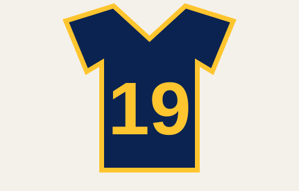
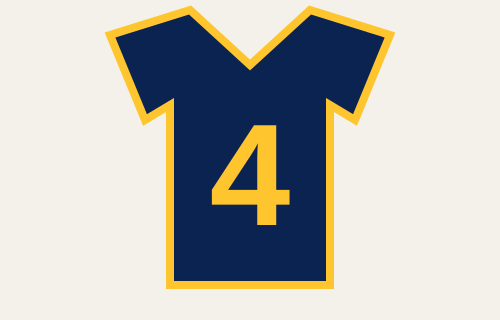

Brewers Legends
The Brewers have retired several numbers to honor people whose careers helped define the franchise. The profiles below focus on three Hall of Fame players closely associated with Milwaukee.

#19
Robin Yount
Yount spent his entire 20-year major-league career with Milwaukee. He won American League MVP awards in 1982 and 1989 and recorded his 3,000th career hit in 1992.

#4
Paul Molitor
Molitor became one of the most productive hitters of his era. His Brewers career included the 1982 pennant season and a 39-game hitting streak in 1987.
Other Retired Numbers
| Number | Honoree | Connection |
|---|---|---|
| 1 | Bud Selig | Founder and former team owner |
| 34 | Rollie Fingers | Hall of Fame relief pitcher and 1981 AL MVP/Cy Young winner |
| 44 | Hank Aaron | Milwaukee baseball icon who finished his playing career with the Brewers |
| 42 | Jackie Robinson | Retired throughout Major League Baseball |